| Highlights Github |
| Currently I am leading the development of multiple large scale data analysis/visualization systems. |
| Work-related | ||
| 2017 - Now |

|
Game Analysis for Canada National Women's Soccer
Tech Lead
Automatically parse the incoming team and player statistic data, and generate detailed interactive analysis/visualization report for the team coach. Plan to aid toward better results before/in 2020 Summer Olympics in Tokyo. Currently adopted by Canada Soccer. |
| 2015 - Now | 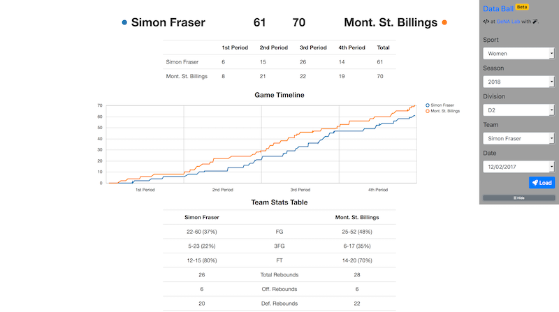 |
Game Analysis for NCAA Men/Women's Basketball
Tech Lead
Automatically collect and parse the statistic and play-by-play data after each NCAA men/women's basketball game, and generate detailed analysis/visualization report for the team coach. Currently adopted by Simon Fraser University. |
| 2014 - Now |

|
GeNA Miner
Tech Lead
A TB-scale data collecting/analysis/visualization system for different data sources, including PubMed, Twitter, and any user uploaded data. Currently adopted by GeNA Lab at Simon Fraser University. |
| Open-Source | ||
| 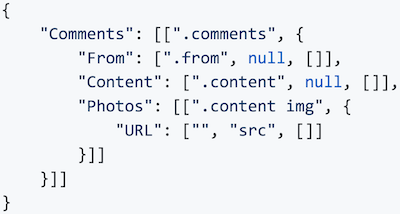 |
html2json
PyPi
A lightweight Python library that parses a HTML webpage to JSON data using a template defined in JSON (as shown in preview). |
|
| 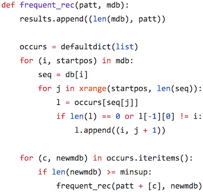 |
PrefixSpan-py
The shortest yet efficient implementation of the most famous frequent sequential pattern mining algorithm PrefixSpan in Python, in only 12 lines in core part (as shown in preview). |
|
| Miscellaneous | ||
| 2008 |
Image from KDD website. |
KDD Cup 2008: Challenge 1
KDD Cup is a top annual data mining competition. The tasks in 2008 focus on early detection of breast cancer from X-ray images. Ranked 7-th under submission name "chuancong". Multiple submissions from the same team are treated as one. |
| Highlights DBLP Google Scholar |
|
My research focuses on Database, Data Cleaning, Data Integration, and Data Mining. I have published 9 conference and journal papers.
WI'2017: Best Student Paper Tsinghua University: Outstanding Master Thesis WWW'2008: Best Poster |
| Pending | |
|
Chuancong Gao.
PhD Thesis
Data Integration on Complex Data. Simon Fraser University, 2017. |
|
|
Chuancong Gao.
Evolving Partial Concept Hierarchy over Ad-hoc Sliding Query. |
|
|
Chuancong Gao, Jian Pei, Jiannan Wang.
Parsing Text to Relational Table via Hidden Schema Discovery. |
|
| 2017 | |
| 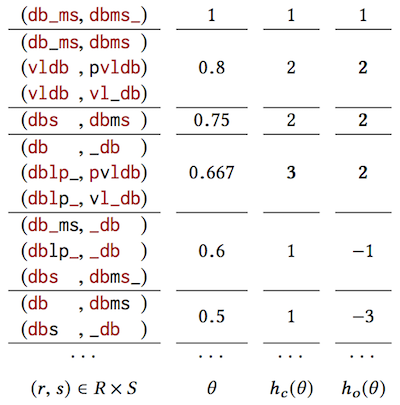 |
Chuancong Gao, Jiannan Wang, Jian Pei, Rui Li, Yi Chang.
Best Student Paper
Preference-driven Similarity Join. Slides 17th IEEE/WIC/ACM International Conference on Web Intelligence, 2017. |
| 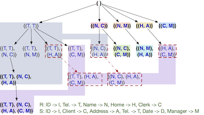 |
Chuancong Gao, Jian Pei, Jiannan Wang, Yi Chang.
Schema-less Join for Result Set Preferences. Preprint Slides IEEE 18th International Conference on Information Reuse and Integration, 2017. |
| 2016 | |
| 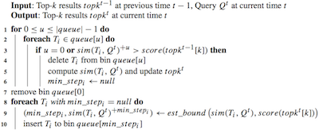 |
Xiaoning Xu, Chuancong Gao, Jian Pei, Ke Wang, Abdullah Al-Barakati.
Continuous Similarity Search for Evolving Queries. Knowledge and Information Systems, 2016. |
| 2012 | |
| 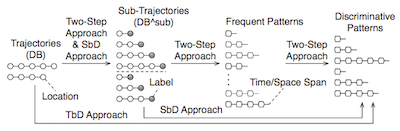 |
Chuancong Gao, Xin Cao, Gao Cong, Man Lung Yiu, Xiaokui Xiao.
Tech Report
Mining Discriminative Distance-Aware Patterns for Trajectory Prediction. |
| 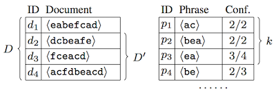 |
Chuancong Gao, Sebastian Michel.
Top-k interesting phrase mining in ad-hoc collections using sequence pattern indexing. Slides 15th International Conference on Extending Database Technology, 2012. |
| 2011 | |
| 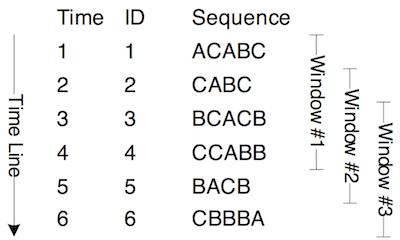 |
Chuancong Gao, Jianyong Wang, Qingyan Yang.
Efficient Discovery of Closed Sequential Patterns over Stream Sliding Window. Slides 11th IEEE International Conference on Data Mining, 2011. |
| 2010 | |
| 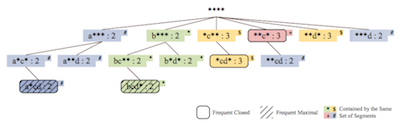 |
Chuancong Gao, Jianyong Wang.
Tech Report
Efficient Discovery of Periodic Patterns over Event Sequences. |
|
Chuancong Gao.
Outstanding Master Thesis
Pattern Discovery Algorithms for Classification. Slides Tsinghua University, 2010. |
|
| 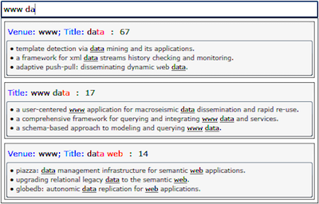 |
Chuancong Gao, Qingyan Yang, Jianyong Wang.
Demo
SEQUEL: Query Completion via Frequent Pattern Mining on Multi-Column Structural Data. Poster 19th ACM Conference on Information and Knowledge Management, 2010. |
| 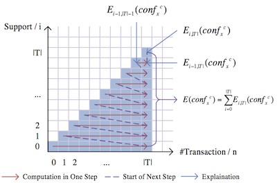 |
Chuancong Gao, Jianyong Wang.
Direct Mining of Discriminative Patterns for Classifying Uncertain Data. Slides Poster Code 16th ACM SIGKDD International Conference on Knowledge Discovery and Data Mining, 2010. |
| 2009 | |
| 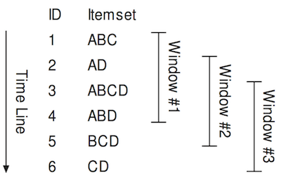 |
Chuancong Gao, Jianyong Wang.
Efficient Itemset Generator Discovery Over a Stream Sliding Window. Slides 18th ACM Conference on Information and Knowledge Management, 2009. |
| 2008 | |
| 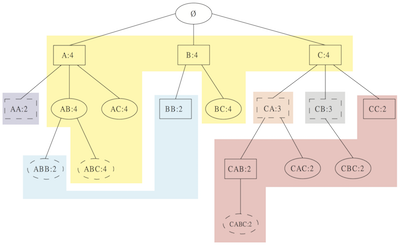 |
Chuancong Gao, Jianyong Wang, Yukai He, Lizhu Zhou.
Tech Report
Efficient Sequence Generator Mining and its Application in Classification. Chuancong Gao, Jianyong Wang, Yukai He, Lizhu Zhou. Best Poster Efficient Mining of Frequent Sequence Generators. Poster 17th International Conference on World Wide Web, 2008. |
| 2013 - Now | |||
| PhD in Computing Science | Simon Fraser University | 🇨🇦 | |
| 2007 - 2010 | |||
| Master in Computer Science | Tsinghua University | 🇨🇳 | |
| 2003 - 2007 | |||
| Bachelor in Computer Science | Shandong University | 🇨🇳 |
| Mentor | ||
| 2017 | Vancouver Sports Analytics Symposium & Hackathon | |
| Teaching Assistant | ||
| 2015 | Undergraduate Course "Database System" | Simon Fraser University |
| 2014 | Undergraduate Course "Introduction to the Internet and the World Wide Web" | Simon Fraser University |
| 2014 | Undergraduate Course "Comparative Programming Languages" | Simon Fraser University |
| 2013 - 2014 | Undergraduate Course "Operating Systems" | Simon Fraser University |
| 2008 - 2009 | Graduate Course "Data Mining" | Tsinghua University |